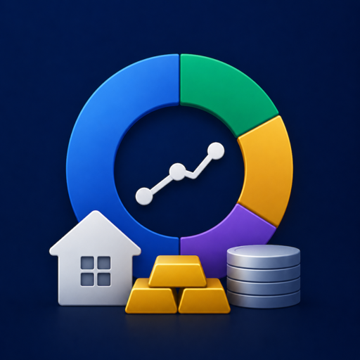

Siamo qui per aiutarti a ottenere il massimo da Holdings.
Apri Holdings e tocca il pulsante più. Scegli una categoria (liquidità, azioni, ETF, immobili e così via). Per gli asset quotati cerca il ticker: Holdings recupera il prezzo in tempo reale da Yahoo Finance. Per liquidità e debiti inserisci tu valore e valuta.
Da Yahoo Finance, per azioni, ETF, obbligazioni, crypto e tassi di cambio. I prezzi si aggiornano quando apri l'app o quando trascini verso il basso l'elenco degli asset.
Se hai effettuato l'accesso a iCloud su tutti i tuoi dispositivi e iCloud Drive è attivo, Holdings sincronizza i dati tramite il tuo contenitore CloudKit privato su iCloud. Di solito le modifiche arrivano in pochi secondi. Non vediamo mai i tuoi dati: viaggiano direttamente tra i tuoi dispositivi attraverso l'infrastruttura di Apple.
Holdings somma tutto nella valuta di visualizzazione, che imposti in Impostazioni. Cambiala in EUR (o in un'altra valuta supportata) e i totali vengono riconvertiti ai cambi correnti. Nel dettaglio, ogni asset mantiene comunque la sua valuta originale.
Per gli immobili in Italia Holdings usa le quotazioni ufficiali OMI dell'Agenzia delle Entrate (per zona e tipologia), aggiornate con l'indice nazionale dei prezzi delle abitazioni. Per Stati Uniti, Germania e Spagna proietta il prezzo d'acquisto con le serie annuali HPI incluse nell'app. Le valutazioni per Regno Unito e Francia arriveranno con un prossimo aggiornamento.
Sì. Quando aggiungi un immobile puoi associargli un debito già esistente come mutuo. Holdings li mostra insieme nella vista del patrimonio e calcola in automatico il valore netto.
La ripartizione geografica (il patrimonio distribuito per Paese), la ripartizione per società e settori, le valutazioni immobiliari, i report PDF e l'importazione/esportazione CSV. Pro è un acquisto singolo da 19,99 €, senza abbonamento. Supporta la condivisione in famiglia, quindi un solo acquisto vale per tutta la famiglia.
Apri la schermata di Holdings Pro e tocca "Ripristina acquisti". Se hai effettuato l'accesso con lo stesso ID Apple usato per l'acquisto, Pro si riattiva subito. I membri della condivisione in famiglia possono ripristinarlo allo stesso modo.
Vai in Impostazioni > Blocca con Face ID / Touch ID. Una volta attivo, Holdings chiede Face ID o Touch ID ogni volta che apri l'app o la riporti in primo piano.
macOS 15.6 o successivo, oppure iOS / iPadOS 18.6 o successivo. La sincronizzazione iCloud è facoltativa ma consigliata.
Elimina Holdings da ogni dispositivo, poi vai in Impostazioni di iOS > [il tuo nome] > iCloud > Gestisci spazio > Holdings ed elimina i dati CloudKit. Così cancelli tutto in modo definitivo.